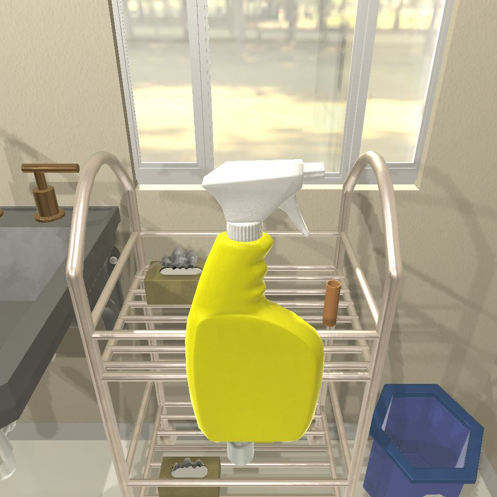
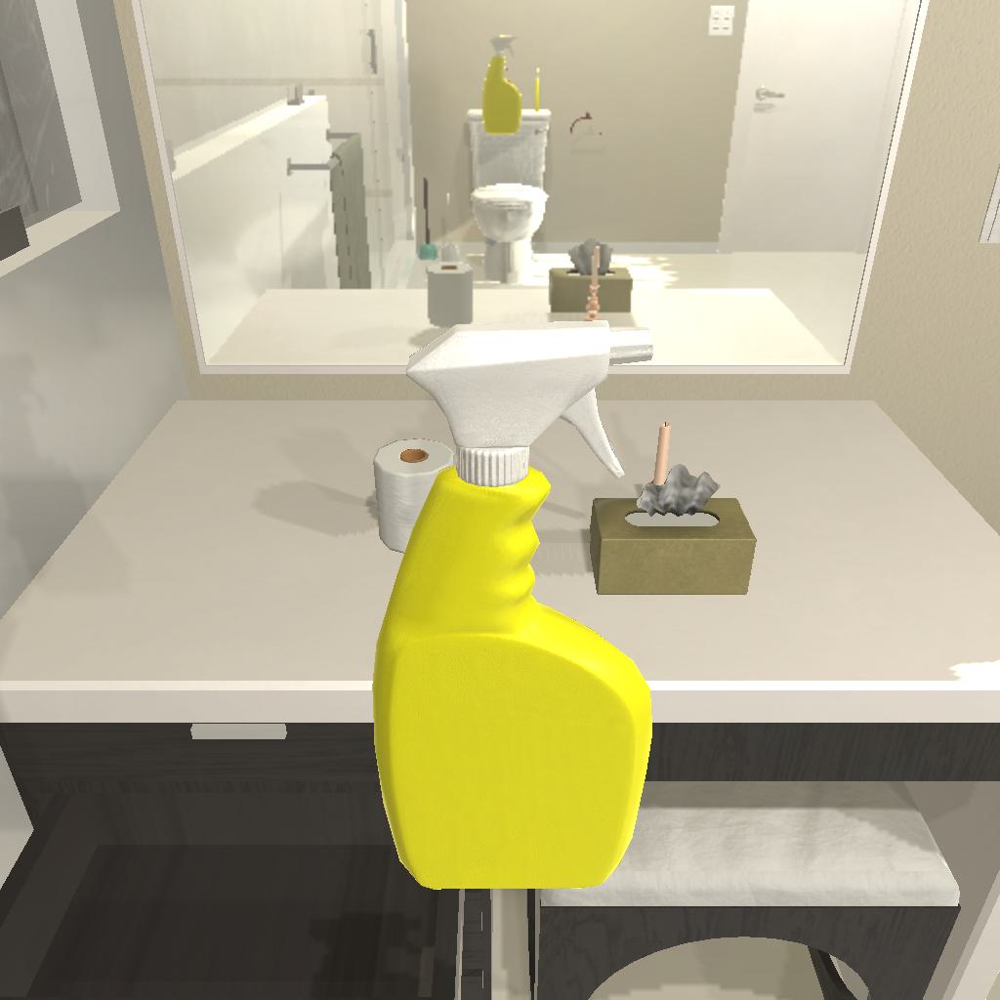

---------------------------------------------------------task: 28---------------------------------------------------------
--------------------------------------------------------------------------------------------------------------------------------------------------------------------
--------------------------------------------------------------------------------------------------------------------------------------------------------------------
Step:--------------------------------------------------------------------------15-------------------------------------------------------------------------------
----------------------------------------
VLM Prompt:
Image1:
Image2:
Image3:
**Instruction**
1. Analyze the provided images to identify all visible household objects and compare the difference between images (e.h. whether the object is opened or not and taken on hand or not), focusing on those relevant to the task description "put two spraybottle in toilet."
2. Use the analysis of images and the task hint "The agent must find an object of the desired type, pick it up, find the correct location to place it, put it down there, then look for another object of the desired type, pick it up, return to previous location, and put it down there with the other object." to answer the question: what is the most reasonable action in the choices for the task description "put two spraybottle in toilet"?
3. Decide and write the answer using the template: The answer is: (i): , where i is the real number. If there is no desired object in images, search every place based on **Initial Observation** to find the object. And if no one is exactly correct, choose a similar answer.
**Initial Observation**
You are in the middle of a room. Looking quickly around you, you can see bathtub (1), bathtubbasin (1), cart (1), sink (1), garbagecan (1), sinkbasin (1), countertop (1), drawer (1-4), toilet (1), toiletpaperhanger (1)
**Answer Choices**
(1): go to bathtub 1
(2): go to bathtubbasin 1
(3): go to sink 1
(4): go to garbagecan 1
(5): go to sinkbasin 1
(6): go to countertop 1
(7): go to drawer 2
(8): go to drawer 3
(9): go to drawer 4
(10): go to toilet 1
(11): go to toiletpaperhanger 1
(12): open drawer 1
(13): close drawer 1
(14): put spraybottle 2 in/on drawer 1
(15): examine spraybottle 2
(16): examine drawer 1
**Answer**
Let's think step by step by following the instructions.
----------------------------------------
----------------------------------------
Original Response:
Image Analysis:
- In image 1, we can see a cart with various items on it, including two spray bottles on the bottom shelf and a sponge and other items on the top shelf. The cart is near a window and a sink.
- In image 2, one of the spray bottles from the cart is now being held in the hand, and the other spray bottle remains on the bottom shelf of the cart.
- In image 3, the spray bottle that was being held in image 2 is now on the countertop near a mirror.
Task Description Analysis:
The task is to put two spray bottles in the toilet. From the initial observation, we know there is a toilet in the room, and from image analysis, we know there are at least two spray bottles available on the cart.
Answer Choices Analysis:
The most reasonable action based on the task description and the initial observation would be to go to the location of the spray bottles, pick them up, and then go to the toilet to place them there. Since we have already picked up one of the spray bottles and placed it on the countertop, the next step would be to pick up the second spray bottle from the cart and then go to the toilet.
The answer is: (10): go to toilet 1
----------------------------------------
----------------------------------------
>>> Refine Original VLM Response and Get Pure Action: go to toilet 1
----------------------------------------
-----------------------------------------------------------------
Running time: 32.56774353981018 seconds
Total Money: 17.990989999999986
-----------------------------------------------------------------
-----------------------------------------------------------------
Text Observation:You arrive at loc 11. On the toilet 1, you see a showerdoor 1, a spraybottle 1, and a soapbottle 1.
-----------------------------------------------------------------
UNSUCCEED